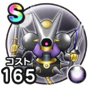

キラーマジンガ
4.5周年記念ウォークフェススキルの斬撃・体技ダメージ+10%デイン属性耐性+10%眠り耐性+10%麻痺耐性+10% / 10点
くわしい特徴
【ランク特殊効果】 スキルの斬撃・体技ダメージ+10%デイン属性耐性+10%眠り耐性+10%麻痺耐性+10%スキルの斬撃・体技ダメージ+7%デイン属性耐性+7%眠り耐性+7%麻痺耐性+7%スキルの斬撃・体技ダメージ+5%デイン属性耐性+5%眠り耐性+5%麻痺耐性+5%デイン属性耐性+3%眠り耐性+3%麻痺耐性+3%なし